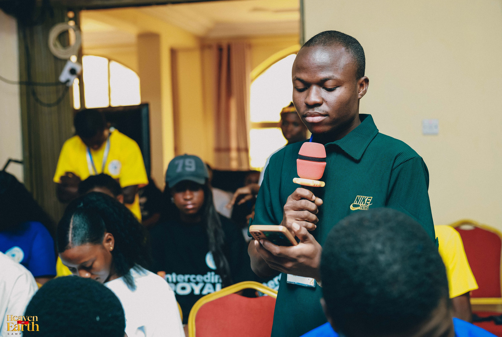

NYANKPALA ZONE YPG
NYANKPALA ZONE YPG
NYANKPALA ZONE YPG
NYANKPALA ZONE YPG
Nyankpala Zone, YPG! We warmly welcome you to our official digital home. We bring together vibrant Christian youths dedicated and commited to building a greater community grounded in faith, deep fellowship, and active service to Christ.
The Young People's Guild is the youth fellowship of the Presbyterian Church of Ghana, committed to nurturing young Christians in faith, fellowship, and service to God and humanity.
The Young People's Guild seek to promote the moral and social well being of its members. It serves as a platform for members to realize their potentials, opportunities and responsibilities within the church and the community. Join us as we work together to make disciples of all nations and promote the spiritual growth of young people in the Presbyterian Church of Ghana.

The Zonal Minister provides spiritual leadership, pastoral guidance, and bibilical teachings, encouraging members to grow in faith and faithfully serve God.

The President provides leadership and coordinates the activities of the Zone, working together with the executive team to promote the vission and mission of the Guild.

The General Secretary is dedicated to effective communication, proper record keeping, and effective addministration to ensure the growth of the youth in Nyankpala Zone.

🕗 8:00 PM
📍 Nyankpala Presby Church.
Join us as we sit to discuss the matters of the Guild and speak on how to grow as Nyankpala Zone YPG.
Tremble with fear and do not sin. Meditate as you lie in bed, and repent of your sins. (Selah)
Psalm 4:4No announcement at the moment

Meet ALHASSAN FUSEINI PHILIP, a dedicated member of the Presbyterian Young People's Guild whose journey reflects faith, commitment, fellowship, and service. Through active participation in church and YPG activities, he continues to inspire others with a heart for God and a passion for serving others. "Worship to the Lord is not about what you want to use yourself to do, but what the Lord Jesus wants you to do!" We celebrate you! Bro Philip, for your dedicated and contribution to the growth of the Guild. May God continue to strengthen, guide, and use you for His glory.
Read Full Story